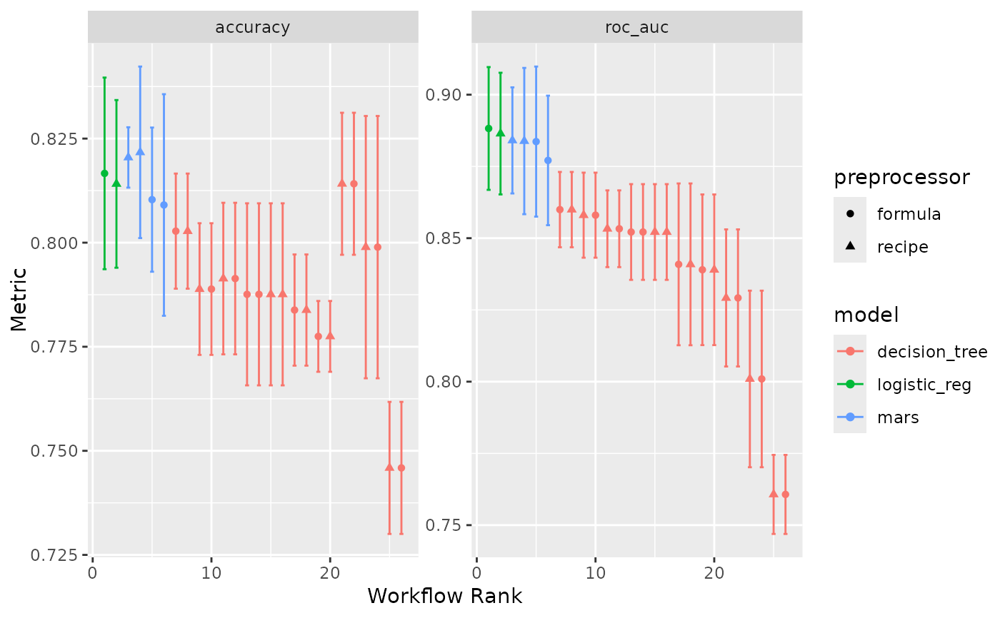
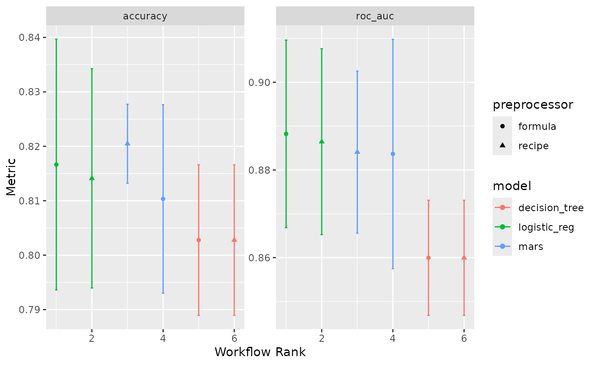
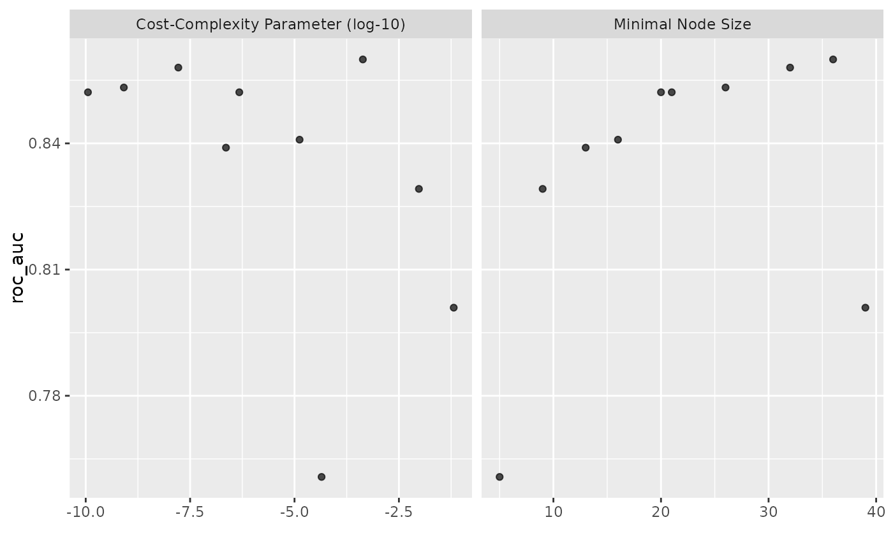

This autoplot() method can performance metrics that have been ranked using
a metric. It can also run autoplot() on the individual results (per
wflow_id).
# S3 method for workflow_set autoplot( object, rank_metric = NULL, metric = NULL, id = "workflow_set", select_best = FALSE, std_errs = qnorm(0.95), ... )
| object | A |
|---|---|
| rank_metric | A character string for which metric should be used to rank the results. |
| metric | A character vector for which metrics (apart from |
| id | A character string for what to plot. If a value of
|
| select_best | A logical; should the results only contain the numerically best submodel per workflow? |
| std_errs | The number of standard errors to plot (if the standard error exists). |
| ... | Other options to pass to |
A ggplot object.
The x-axis is the workflow rank in the set (a value of one being the best) versus the performance metric(s) on the y-axis. With multiple metrics, there will be facets for each metric.
If multiple resamples are used, confidence bounds are shown for each result.
